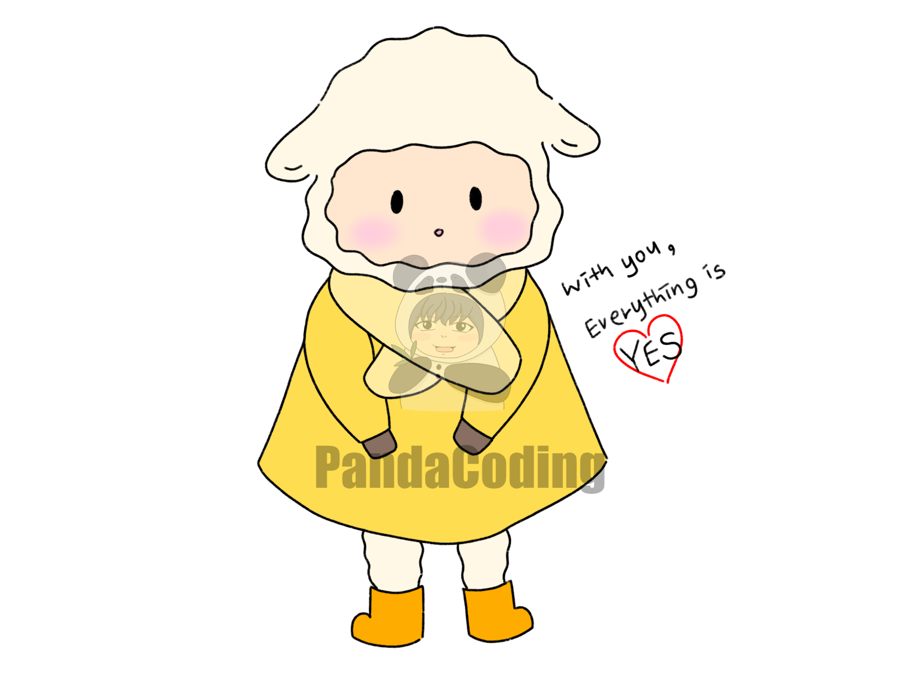

당신의 연애유형은?!
난 너랑 하는 것들 다 좋아, 순종적인 '양'

연애할 때 모든 걸 맞춰주려고 하는 당신! 다정한 느낌과 상냥한 모습을 가지고 있어, 상대방 입장에서 편안한 느낌을 받을 수 있답니다. 타오르는 연애보다는 안정적인 연애를 추구하고, 상대방에게 마음을 여는 순간 진심으로 사랑에 푹 빠질 수 있습니다. 또한 강인한 생존력과 수완이 좋으나, 한편으로는 자신이 원하는 바를 모두 쟁취하려는 고집이 있어요. 이 고집이 심해지면 다른 사람 눈에서는 계산적인 사람처럼 보여 매력을 잃을 수 있습니다!